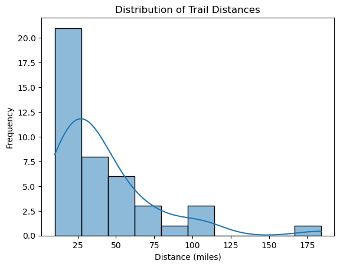
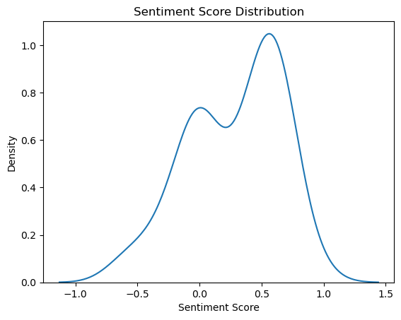
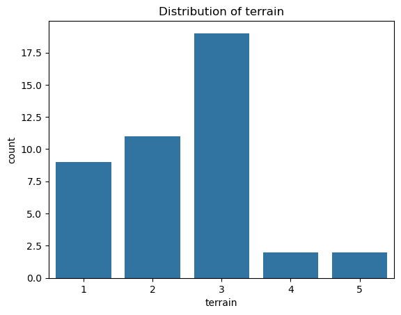
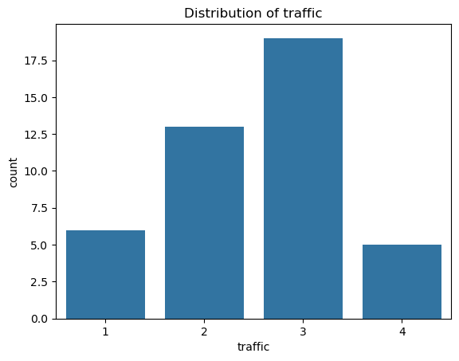
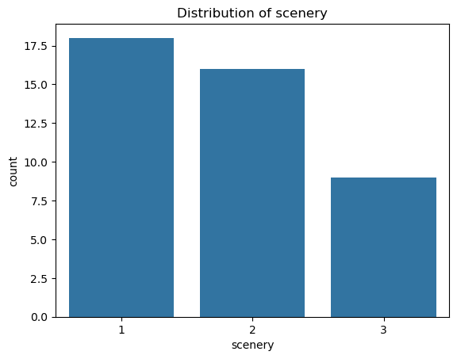
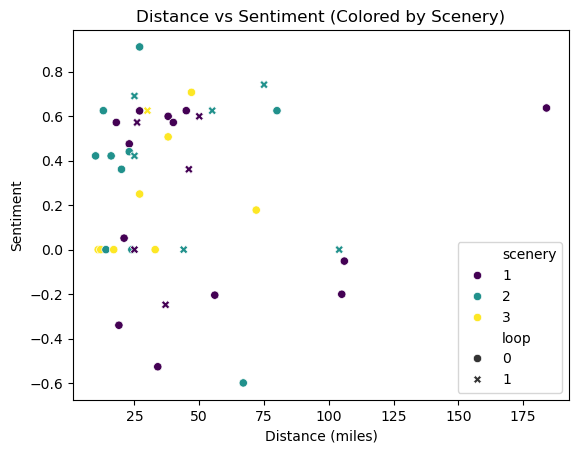

With our processed data, we created numerous visualizations to uncover the underlying patterns in the bike trail dataset. Most of the analyses focused on univariate relationships, though we also explored some bivariate relationships, particularly between trail ratings. Additionally, we examined the potential for clustering by comparing mileage with sentiment, using the trail’s scenery score as a color-coded feature.
Overview Of Methodolody
Univariate Analysis
Numerical Variables
We analyzed the distributions of numerical variables, particularly mileage and sentiment:
Mileage: A discrete variable, categorized into bins for easier analysis. The distribution shows that most trails fall within the 10-120 mile range, with a slight right skew indicating a few longer trails (up to 175 miles).
Sentiment: A continuous variable analyzed using Kernel Density Estimation. The distribution reveals that most sentiments are positive, concentrated within the 0-0.8 range. The bimodal nature of the distribution indicates peaks around 0 and 0.6.
Categorical Variables
Bar charts helped us visualize the distributions of trail ratings—terrain, traffic, and scenery:
Terrain: The only rating using the full range (1-5). Most trails are rated 3, with fewer trails rated 4 or 5.
Traffic: Ranges from 1-4, with most trails rated 2 or 3.
Scenery: Restricted to scores of 1-3, with the majority of trails rated 1 or 2.
Bivariate Analysis
Heatmaps
We explored relationships between trail ratings using heatmaps:
Terrain vs. Scenery: The combination of terrain (3) and scenery (1) is the most frequent.
Terrain vs. Traffic: The most common combination is when both ratings are 3.
Traffic vs. Scenery: Most common combinations are scenery (1) and traffic (2) as well as scenery (2) and traffic (3).
Correlation Analysis
A correlation matrix comparing mileage, sentiment, and the three ratings showed no strong correlations. However, sentiment and terrain rating had the highest correlation, suggesting that challenging terrains might lead to more negative sentiments.
Multivariate Analysis
To identify potential clusters, we visualized distance vs. sentiment, color-coded by the scenery score and annotated with the loop variable (loop vs. non-loop trails). The scatter plot revealed:
No clear clusters based on distance and sentiment.
Scenery scores often grouped closely, with no discernible differences between loop and non-loop trails.
Statistical Tests
We conducted a series of statistical tests to analyze the relationships between numerical, binary, and categorical features in our dataset. Below, we outline the methodology and results for each type of test:
Kolmogorov-Smirnov Test
To assess the normality of the numerical variables (mileage and sentiment), we used the Kolmogorov-Smirnov test. The results indicated that both variables appear to be normally distributed:
Sentiment: p-value ≈ 0.198
Mileage: p-value ≈ 0.091
Since the p-values are greater than 0.05, we fail to reject the null hypothesis, concluding that both variables are likely normally distributed.
t-Tests (Continuous vs. Binary Variables)
We performed t-tests to compare the means of numerical variables (sentiment and mileage) across each binary variable in the dataset. For every combination:
The p-values were greater than 0.05.
This indicates that we fail to reject the null hypothesis, suggesting no significant differences in means between the numerical variables from the lens of the the binary features.
Chi-Squared Tests (Categorical Features)
We used chi-squared tests to examine the independence between all pairs of categorical variables (traffic, terrain, scenery, state1, and state2). The results revealed statistically significant associations for the following pairs:
Traffic vs. Terrain: p-value ≈ 0.039
Terrain vs. State1: p-value ≈ 0.033
State1 vs. State2: p-value ≈ 5.61e-11
For these pairs, we reject the null hypothesis at a significance level of 0.05, concluding that these categorical variables are not independent. All other pairs yielded p-values greater than 0.05, indicating no evidence of dependence.
ANOVA Tests (Continuous vs. Categorical Variables)
We conducted ANOVA tests to compare the means of continuous variables (sentiment and mileage) across the levels of categorical variables. Notable results include:
Sentiment across Terrain Levels: p-value ≈ 0.028
This suggests a significant difference in sentiment means across terrain categories, leading us to reject the null hypothesis.
Sentiment across Traffic Levels: p-value ≈ 0.059
Although this result is close, it does not meet the 0.05 significance threshold.
For all other tests, the p-values were greater than 0.05, indicating no significant differences in means across the levels of the binary or categorical variables.
Statistical Summary
Normality (Kolmogorov-Smirnov): Both sentiment and mileage are likely normally distributed.
t-Tests: No significant differences in means between numerical and binary variables.
Chi-Squared Tests: Significant associations observed for traffic vs. terrain, terrain vs. state1, and state1 vs. state2.
ANOVA: Significant differences in sentiment across terrain levels; no other significant results.
These findings provide insights into the relationships within the dataset and guide further analysis.
Key Insights
Sentiment is generally positive, with a bimodal distribution.
Most trails are relatively short (10-120 miles), though a few exceed 175 miles.
Terrain ratings are diverse, but traffic and scenery ratings have narrower ranges.
No strong correlations exist between numerical or categorical variables.
Distinct clusters are not evident based on distance, sentiment, or scenery.
Conclusion and Next Steps
The EDA revealed limited patterns for effectively grouping trails. While the correlation matrix and scatter plots showed minimal relationships, the insights into distributions and rating combinations inform our understanding of the data. These findings will guide the next steps:
Modeling: Explore whether machine learning can identify subtle patterns.
Feature Engineering: Consider different variable relationships or transformations to improve clustering potential.
All visualizations, including heatmaps, bar charts, and scatter plots, as well as statistical testing outputs, can be found in the Code section below.
Code
The first step is just to load in the pacakges we want to use as well as the now cleaned CSV file created in the previous step.
# ------------------------------------ IMPORTS ------------------------------------ #import numpy as npimport pandas as pdimport seaborn as snsimport matplotlib.pyplot as pltfrom itertools import combinationsfrom scipy.stats import kstest, chi2_contingency, ttest_ind, f_oneway# read in datadf = pd.read_csv('../../data/processed-data/dc_bike_routes.csv')df.head()
name
distance_mi
terrain
traffic
scenery
distance_norm
unpaved
flat
workout
park
river
loop
sentiment
state1
state2
0
Potomac Tour
10
1
2
2
-0.963394
0
0
0
0
0
0
0.4215
DC
DC
1
BWI Trail
11
2
1
3
-0.933354
0
0
0
0
0
0
0.0000
MD
MD
2
Airpark Cruise
12
3
3
3
-0.903313
1
0
1
1
0
0
0.0000
MD
MD
3
Seneca Valley Tour
13
3
3
2
-0.873273
0
0
1
1
0
0
0.6249
MD
MD
4
For The Boyds
14
2
3
2
-0.843232
1
0
1
1
0
0
0.0000
MD
MD
Here we provide descriptive statistics of the numeric variables in the data set. Then the distributions of each of these variables is plotted.
# ouput summary stats for numerical variablesprint(df[['distance_mi', 'sentiment']].describe())# plot distribution of distancessns.histplot(df['distance_mi'], kde=True, bins=10)plt.title('Distribution of Trail Distances')plt.xlabel('Distance (miles)')plt.ylabel('Frequency')plt.show()# plot distribution of sentiment scoressns.kdeplot(df['sentiment'])plt.title('Sentiment Score Distribution')plt.xlabel('Sentiment Score')plt.show()
distance_mi sentiment
count 43.000000 43.000000
mean 42.069767 0.280684
std 33.682266 0.374312
min 10.000000 -0.599400
25% 22.000000 0.000000
50% 30.000000 0.421500
75% 48.500000 0.611650
max 184.000000 0.911500


This code analyzes the categorical and binary variables in the dataset by summarizing their distributions and visualizing their occurrences. It first counts and displays the frequency of each category for ranking variables, providing insight into the most common and rare trail characteristics. Similarly, it counts the occurrences of binary variables so we better understand the prevalence of these trail features. Finally, the count plots visualize the distributions of the ranking variables, offering a clear graphical representation of the frequency of each ranking level.
# Count occurrences of each category for ranking variablesrank_counts = df[['terrain', 'traffic', 'scenery']].apply(lambda x: x.value_counts())print(rank_counts)# Count occurances of each binary for labeling variablesbinary_counts = df[['unpaved', 'flat', 'workout', 'park', 'river', 'loop']].apply(lambda x: x.value_counts())print(binary_counts)# Plot distribution of ranking variablesfor col in ['terrain', 'traffic', 'scenery']: sns.countplot(data=df, x=col) plt.title(f'Distribution of {col}') plt.show()
terrain traffic scenery
1 9 6.0 18.0
2 11 13.0 16.0
3 19 19.0 9.0
4 2 5.0 NaN
5 2 NaN NaN
unpaved flat workout park river loop
0 26 42 40 38 40 31
1 17 1 3 5 3 12



In this multivariate analysis, a correlation matrix is output to better understand the effects variables have on one another. Further, cross tabulations are calculated for each interaction of the ranking variables and output using heatmaps. This also aides in understanding how these important variables interact with one anther.
# calculate correlation matrixprint(df[['distance_mi', 'sentiment', 'terrain', 'traffic', 'scenery']].corr())# Investigate relationships between categorical variablesfig, axes = plt.subplots(1, 3, figsize=(15, 5))# Take crosstabulation and plot in a heatmapcrosstab1 = pd.crosstab(df['terrain'], df['scenery'])sns.heatmap(crosstab1, ax=axes[0], annot=True, cmap='viridis')axes[0].set_title('Terrain vs Scenery')# Take crosstabulation and plot in a heatmapcrosstab2 = pd.crosstab(df['terrain'], df['traffic'])sns.heatmap(crosstab2, ax=axes[1], annot=True, cmap='viridis')axes[1].set_title('Terrain vs Traffic')# Take crosstabulation and plot in a heatmapcrosstab3 = pd.crosstab(df['scenery'], df['traffic'])sns.heatmap(crosstab3, ax=axes[2], annot=True, cmap='viridis')axes[2].set_title('Scenery vs Traffic')plt.show()
This simple portion just plots the data with distance against sentiment to see if having a higher sentiment might mean a shorter distance. The points are also colored and styled on different categorical variables to understand any other underlying interactions. We notice that loops tend to have higher sentiments and are shorter in distance on average.
# visualize distance against sentiment to see if longer trails correlate with higher sentiment# color points based on scenery score and style them based on if ther are a loopsns.scatterplot(data=df, x='distance_mi', y='sentiment', hue='scenery', style='loop', palette='viridis')plt.title('Distance vs Sentiment (Colored by Scenery)')plt.xlabel('Distance (miles)')plt.ylabel('Sentiment')plt.show()

Below, we break the variables into their respective groups of continuous, categorical, and binary. Then, we assess the continuous variables to see if they are normally distributed, a necessary assumption for further analysis. The Kolmogorov–Smirnov test is used to test if they came from their expected normal distribution given those parameters. We conclude that both sentiment and distance_mi are normally distributed.
# Break columns into respective groups, continuous, categorical, binarycont_vars = ['sentiment', 'distance_mi'] #, 'distance_norm']cat_vars = ['traffic', 'scenery', 'terrain', 'state1', 'state2']bin_vars = ['unpaved', 'flat', 'workout', 'park', 'river', 'loop']# Check continuous numeric vars for normality# test numeric varaibles for normalityfor var in cont_vars:# Perform KS test, compare obs distribution with expected normal distribution stat, p = kstest(df[var], 'norm', args=(np.mean(df[var]), np.std(df[var])))# simple if statement to interpret resultif p >0.05:print(f"{var} appears to be normally distributed (p-value={p}).")else:print(f"{var} does not appear to be normally distributed (p-value={p}).")
sentiment appears to be normally distributed (p-value=0.19893260966830684).
distance_mi appears to be normally distributed (p-value=0.09142254585650134).
This code performs T-tests to compare the means of continuous variables against binary variables in the dataset. For each continuous variable, it iterates through all binary variables and divides the data into two groups based on whether the binary variable is 0 or 1. A T-test is then conducted to determine whether there is a statistically significant difference in the means of the continuous variable between the two groups. The results, including T-statistics and p-values, are compiled into a DataFrame and printed for each continuous variable. This approach provides valuable insights into potential relationships between continuous features and binary attributes, helping identify meaningful differences in trail characteristics.
# Statistical testing# T-test# iterate over the continuous variablesfor var1 in cont_vars:# print statement which variable you are comparing means ofprint(f'Means Across {var1.capitalize()}')# Initialize lists to store test stats and pvals ts = [] pvals = []# iterate over the binary variablesfor var2 in bin_vars:# make seperate lists for routes with 0 or 1 for current variable zeros = df[df[var2]==0][var1] ones = df[df[var2]==1][var1]# conduct the t test ttest = ttest_ind(zeros, ones)# append the test stat and pvalue to their lists ts.append(ttest.statistic) pvals.append(ttest.pvalue)# optional output# print(f'T-Test for {var2}: t={ttest.statistic}, p-val={ttest.pvalue}')# Combine into orderly data frame for outputprint(pd.DataFrame({'variable':bin_vars, 'T-stat': ts, 'p-values':pvals}), '\n')
Means Across Sentiment
variable T-stat p-values
0 unpaved -0.798712 0.429060
1 flat -1.255270 0.216489
2 workout 0.343609 0.732897
3 park 1.252806 0.217375
4 river 0.273525 0.785823
5 loop -0.925050 0.360353
Means Across Distance_mi
variable T-stat p-values
0 unpaved -0.337290 0.737619
1 flat -0.988985 0.328471
2 workout 1.577108 0.122456
3 park 0.692671 0.492421
4 river 0.836002 0.407999
5 loop -0.371249 0.712363
The next portion of code evaluates the relationship between pairs of categorical variables using the Chi-Squared test. It first generates all possible, non-repeated pairs of categorical variables using combinations. For each pair, it constructs a contingency table that shows the frequency of occurrences for each combination of the pair’s categories. A Chi-square test is then conducted on the contingency table to assess whether the variables are statistically independent. The test statistics and p-values are collected and organized into a DataFrame for easy interpretation.
# Chi-square# use combinations to find all non repeated pars of categorical variablespairs =list(combinations(cat_vars, 2))# Initialize lists to store test stats and pvalschi2s = []pvals = []# iterate over the pairs of categorical variablesfor pair in pairs:# construct contingency table of current pair contingency_table = pd.crosstab(df[pair[0]], df[pair[1]])# conduct the chi square test chi2 = chi2_contingency(contingency_table)# append the test stat and pvalue to their lists chi2s.append(chi2.statistic) pvals.append(chi2.pvalue)# optional output# print(f'Chi-Square test for {pair[0]} and {pair[1]}:\n\t chi2={chi2.statistic},\n\t p-val={chi2.pvalue}')# Combine into orderly data frame for outputprint(pd.DataFrame({'pair':pairs, 'Chi2 Stat': chi2s, 'p-values':pvals}))
Finally, we use one way ANOVA tests to compare the means of continuous variables across the different categories of the categorical variables. After dividing the data into separate categories based on the current variable being assessed, an ANOVA test is performed to determine if there are significant differences in the means of the continuous variable for the different categories. The results, including the F-statistic and p-values, are collected and organized into a DataFrame for easy interpretation. This analysis helps identify whether the continuous variables differ significantly across various categories, providing insights into how different attributes of bike trails might affect riders’ experiences.
# ANOVA# iterate over the continuous variablesfor var1 in cont_vars:# print statement which variable you are comparing means ofprint(f'Means Across {var1.capitalize()}')# Initialize lists to store test stats and pvals fs = [] pvals = []# iterate over the categorical variablesfor var2 in cat_vars:# get unique categories from current variable groups = df[var2].unique()# for each unique category, subset and get the current continuous column group_data = [df[df[var2] == category][var1] for category in groups]# conduct the one way anova test, test across the categories in the current variable anova = f_oneway(*group_data)# append the test stat and pvalue to their lists fs.append(anova.statistic) pvals.append(anova.pvalue)# print(f'ANOVA Test for {var2}: f={f_oneway.statistic}, p-val={f_oneway.pvalue}')# Combine into orderly data frame for outputprint(pd.DataFrame({'variable':cat_vars, 'F-stat': fs, 'p-values':pvals}), '\n')